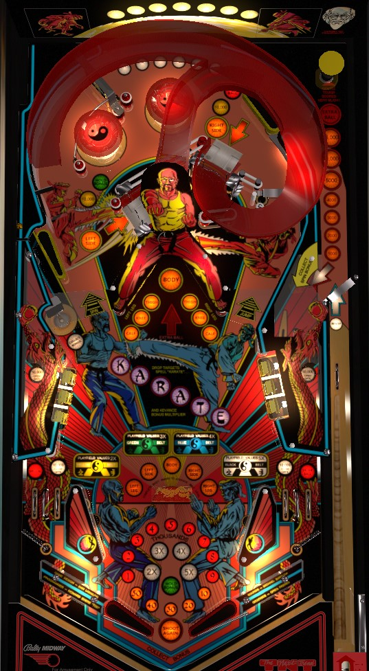

Black Belt and Karate Fight are the same game: Black Belt was renamed Karate Fight for its European release, likely to differentiate this game from Blackbelt (Zaccaria, 1986).
Shoot the center saucer, both ramps, and complete both banks of center standup targets to advance the belt. Each belt advance increases the playfield multiplier, up to a maximum of 5x, which applies to everything in the game. Once the playfield multiplier is high, pass the ball between the upper flippers repeatedly via the ramps for 10,000 points times playfield multiplier per shot as well as a chance at extra ball and Special. Standup targets, drop targets, and in/out lanes advance bonus; completing both sets of drop targets to spell Karate advances bonus multiplier.
Gentle Touch Scores Much! The skill shot is a precise power plunge that is strong enough to hit the mushroom bumper at the back right of the game, but weak enough that it takes as long to hit the mushroom as possible. When the ball rolls over the switch in the shooter lane labelled Ready, the orange lights at the end of the shooter lane will light progessively. The highest-value lit orange insert when the ball hits the mushroom bumper is what is scored: 1,000, 2,000, 3,000, 4,000, 5,000, 10,000, or 25,000 points, or an extra ball. If too much time passes after extra ball is lit, the game assumes you plunged too soft and missed the bumper, so the skill shot is cancelled. If you full plunge with reckless abandon, you'll usually get 3,000 points off the skill shot.
After the skill shot, the ball trickles into the right kicker, where it is launched around the game's orbit anticlockwise, and can be whacked with either upper flipper on the way.
Complete training on all 5 body parts- left leg, left side, body, right side, and right leg- to advance the Belt by one level to yellow, then green, then blue, then black. Those belts correspond to 2x, 3x, 4x, and 5x all playfield scoring respectively. The left side and right side body parts each need one shot up the left and right ramps respectively; the left leg and right leg require completing the 3-banks of standup targets in the center of the table; the body requires shooting the center saucer between the center standup targets. Body parts can be collected in any order, but you must complete a set of 5 and advance the Belt level before you can collect that body part again and earn credit for a future set. Game settings determine whether completed body parts are held over from ball to ball or not; by default, they are. Belt levels are always carried from ball to ball. Collecting any body part scores 5,000 points (times playfield multiplier).
The Body is typically the easiest body part to earn. If you collect the other four first, then as soon as you collect the 4th body part, the center saucer will be lit for extra ball for about 12 seconds in addition to scoring the Body and, by extension, a Belt advance.
Scoring listed in the remainder of this guide as base value and does not take into account any playfield multipliers.
Ramps are only accessible from the upper flippers. The upper left flipper is in a somewhat reasonable position, but the upper right flipper is near the back of the game and flips the ball down the playfield. Making either ramp in full puts the ball on or in front of the opposite upper flipper, making it possible to combo the ramps back and forth with good timing.
The entrance switches for both ramps score 700 points. The left and right ramps award the Left Side and Right Side body parts when flashing; making a flashing ramp scores 5,000 points and lights the ramp solidly. Ramps score 10,000 points after their respective body parts have been collected.
Additional awards are available for comboing the ramps back and forth certain numbers of times. Making 2 ramps consecutively lights the lower left saucer for Collect Bonus, which always collects the entire bonus including multiplier; it does not reset any part of the bonus, but is also not affected by the playfield multiplier from belt advances. Making 3 ramps consecutively lights the left ramp for Hold Bonus, but I have not been able to actually collect the lit Hold Bonus, so I am not sure what parts of the bonus are held. Making 9 ramps back and forth lights the right ramp for extra ball, and making 11 ramps back and forth lights the left out lane for Special.
Making either ramp at any time scores a bonus advance.
The spinner is in the back of the game and can be spun by taking the orbit in either direction. The spinner scores 500 points per spin, Each spin of the spinner also rotates which light is lit out of the orange inserts that depict the skill shot values; making the ball in the right kicker within a couple seconds of spinning the spinner scores whichever orange value is currently lit.
The 3 targets in each 3-bank correspond to a Calf, a Knee, and a Thigh. These targets start out flashing. Hit a flashing target to score 2,000 points and a bonus advance, and light it solidly. Lit targets score 500 points. Lighting all 3 targets in a bank award either the Left Leg or Right Leg, depending on which bank was completed.
Scores 5,000 points and a bonus advance. Awards the Body toward a belt advance if it has not already been collected. If the other 4 body parts have been collected but the Body itself has not, the center saucer will briefly be lit for extra ball.
Each drop target down in either 3-bank scores 5,000 points and a bonus advance. The standup targets behind the drops each score 500 points. Completing both banks of drop targets is the only way to reset them; this also advances the bonus multiplier by 1x up to the maximum of 5x. Completing both banks of drop targets again when 5x has already been earned lights the right out lane for extra ball.
The Dragon lanes are positioned directly above the out lanes. Dragon lanes always score 10,000 points and a bonus advance. If the out lane gate on the same side of the table as the scored Dragon lane is not currently open, the Dragon lane will open that gate for about 5 seconds, turning said out lane into a second in lane for that time. Making the in lane on the same side of the table as the open gate closes that gate; the gate also closes on its own after the time expires, but the gate does not close for being used.
Black Belt has a conventional in/out lane setup. Out lanes score 5,000 points. In lanes score 10,000 points. There is a gate in each out lane that redirects the ball to the in lane; these gates are opened by the Dragon lanes, and closed by the in lanes or after a certain amount of time passes.
Bonus is advanced by making any flashing center standup target, any drop target, the Dragon lanes, the in/out lanes, and making either ramp. Bonus multiplier is advanced by completing both 3-banks of drop targets to spell Karate. Max bonus is 5x 118,000 = 590,000 points. Making 2 consecutive ramps lights the left saucer for Collect Bonus, which scores the full bonus including multiplier but does not reset the bonus or multiplier (and is not affected by playfield X from belt upgrades). Making 3 consecutive ramps lights the left ramp for Hold Bonus, but I have not been able to actually collect this award for some reason, so I do not know exactly how it works- it probably holds your base bonus to the next ball, but not your multiplier. By default, base bonus and bonus multiplier are both reset for each ball.
Special can be set to award points, but I am not sure how many. There is no setting listed in the game manual that assigns a point value to extra ball.
The slingshots can be disabled, for some reason.
There is no ball save on Black Belt. Anywhere from 0 to 3 tilt warnings can be allowed.
The consecutive ramps threshold for Hold Bonus/Extra Ball/Special being 3/9/11 respectively listed in the body of the guide is on the easiest setting. Other settings require 6/11/13, 8/13/15, or 10/15/17.
The timer on the Body saucer extra ball can be 6, 12, or 18 seconds.
The exact length of time that the Dragon gates remain open can be set to Short, Medium, or Long, but the exact lengths of these settings is not listed, since the exact length also depends on ball number (later = more time) and belt level (higher = less time).